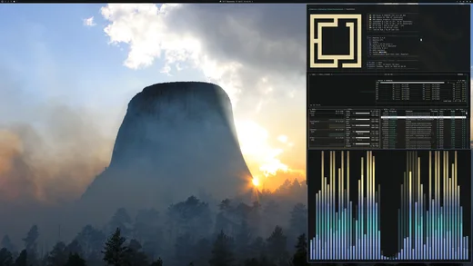

Subo videos de tecnología.
Hacé un test para descubrir qué rastro dejás en internet y cómo cuidar tu privacidad.

Mi configuración de Omarchy con modo tablet, teclado en pantalla, tema Alpenglow y tope de carga al 80%.
Script de PowerShell para limitar la carga al 80% en laptops HP, Lenovo y Dell compatibles.